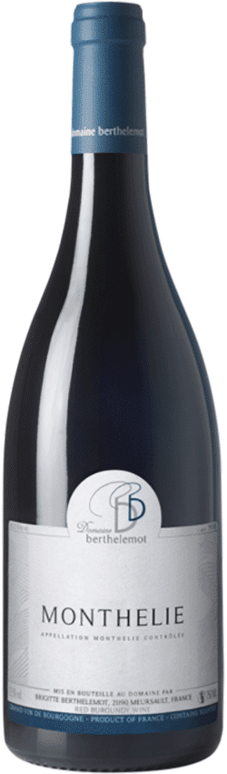
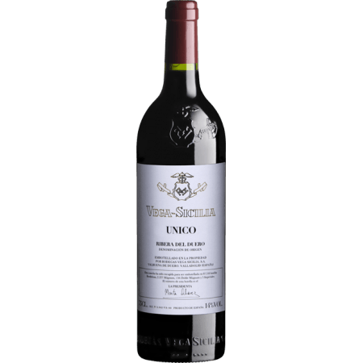
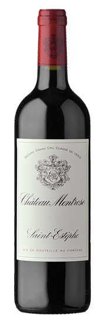

Domaine Berthelemot Monthélie Rouge 2017
BOURGOGNE
Bouteille 75cl
Le Château Montrose est situé sur la commune de Saint-Estèphe sur 95 hectares de vignes qui l’entourent d’un seul
tenant et bénéficie d’une formidable situation face à la Gironde sur des graves pyrénéennes, mélangées à du sable noir qui devient ferrugineux
à 60cm de profondeur.

Unico 2010 - vega sicilia
Espagne
Bouteille 75cl
Il est difficile de trouver meilleur rapport Qualité/Prix en Bourgogne.
Ce Monthélie présente de très beaux arômes fruités, des tanins subtiles et fondus et un équilibre parfait entre gourmandise, puissance et tension.
Un vin croquant et craquant sur une appellation en plein boom !

Château Montrose - 2e Cru Classé
BORDEAUX - SAINT-ESTEPHE AOP
Bouteille 75cl
Vega Sicilia est plus qu'un grand domaine, c'est un véritable mythe vivant !!!
Une histoire qui a commencé en 1848 et qui se poursuit d'année en année, pour offrir non pas d'excellents vins,
mais des vins espagnols vraiment sensationnels